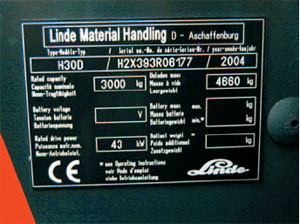
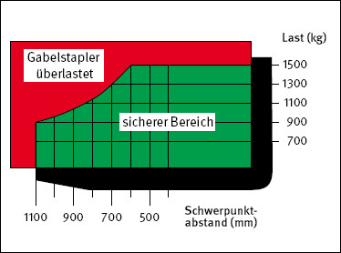
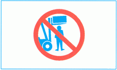
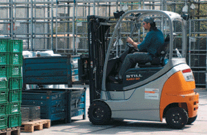
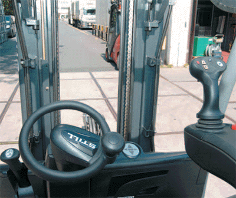
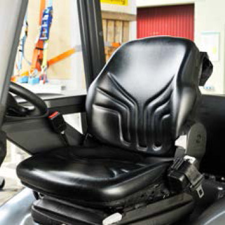
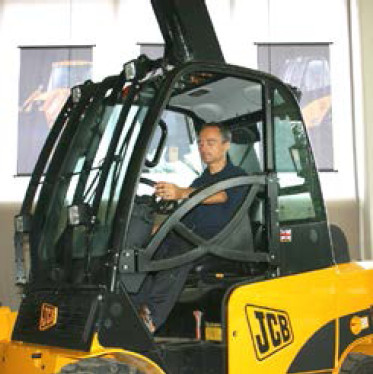

Der betriebssichere Zustand des Gabelstaplers ist eine wesentliche Voraussetzung für die Sicherheit im betrieblichen Transportwesen.
Die Unfallverhütungsvorschrift "Flurförderzeuge" (BGV D27) beinhaltet nur Regelungen für den Betrieb und die Prüfung von Flurförderzeugen.
Beschaffenheitsanforderungen regelt § 7 der Betriebssicherheitsverordnung. Das heißt, es müssen die grundlegenden Sicherheits- und Gesundheitsanforderungen nach Anhang 1, Punkt 3 der Betriebssicherheitsverordnung eingehalten werden. Sicherheits- und Gesundheitsanforderungen für Flurförderzeuge, die ab dem 01.01.1996 beschafft wurden, werden durch europäische Normen konkretisiert.
Die Übereinstimmung des Flurförderzeuges mit der EU-Maschinenrichtlinie wird vom Hersteller bzw. Importeur durch
bestätigt.
Außerdem ist eine Betriebsanleitung in deutscher Sprache mitzuliefern.
Jeder Gabelstapler hat ein Fabrikschild (Bild 2-1) mit folgenden Angaben:
Bei Gabelstaplern mit batteriegespeistem Elektroantrieb wird das Leergewicht ohne Batterie angegeben; deshalb sind dann zusätzlich erforderlich:

Das Leergewicht eines Gabelstaplers beträgt etwa das Doppelte seiner Nenntragfähigkeit.
Das Gesamtgewicht setzt sich aus dem Eigengewicht und Lastgewicht zusammen. Die Fahrbereiche im Betrieb müssen für das Gesamtgewicht ausgelegt sein. Bereiche mit eingeschränkter Belastung (z. B. Kanalabdeckungen, Decken, Rampen, Aufzüge usw.) sind besonders zu kennzeichnen.
Bei einem Eigengewicht von 6 000 kg und einem Lastgewicht von 3 000 kg beträgt das Gesamtgewicht 9 000 kg. Bei einem beladenen Gabelstapler wird die Vorderachse mit ca. 90 % des Gesamtgewichtes belastet. In unserem Beispiel kann dann ein Rad den Boden mit 4 000 kg belasten.
Jeder Gabelstapler mit einem Hubgerüst vor der Vorderachse ist mit einem Tragfähigkeitsschild in Form eines Lastschwerpunkt-Diagramms ausgerüstet (Bild 2-2). Die Zahlen des Diagramms geben an, wie weit der Schwerpunkt einer Last vom senkrechten Teil der Gabeln, dem Gabelrücken, höchstens entfernt sein darf.
Die Nenn-Tragfähigkeit des Gabelstaplers, die auf dem Fabrikschild angegeben ist, bezieht sich bei den meisten Geräten auf den Lastschwerpunktabstand von 500 mm, und zwar bis zu einer Hubhöhe von 3 300 mm.

An einem Gabelstapler mit mehr als 2 000 mm Hubhöhe ist ein dauerhafter und leicht erkennbarer Hinweis angebracht (Bild 2-3):

Gabelstapler mit einem Hub von mehr als 1,80 m müssen mit einem Fahrerschutzdach gegen herabfallende Lasten ausgerüstet sein (Bild 2-4).

Jeder Gabelstapler besitzt:

Der Unternehmer hat dafür zu sorgen, dass die Fahrer von Gabelstaplern mit Fahrersitz durch geeignete Einrichtungen vor Witterungseinflüssen geschützt sind, wenn die Gabelstapler nicht nur gelegentlich zu Arbeiten im Freien eingesetzt werden. Zum Schutz des Fahrers können z. B. Fahrerkabinen, gegebenenfalls mit Standheizung oder Klimaanlage, in Betracht kommen.
Nach einer berufsgenossenschaftlichen Erhebung ereignen sich jährlich 10 bis 15 tödliche Unfälle durch umkippende Gabelstapler. Ursache hierfür sind im Wesentlichen zu schnelle Kurvenfahrten und das Fahren mit angehobenen Lastaufnahmemitteln. Bei diesen Unfällen werden in der Regel die Fahrer dadurch verletzt oder getötet, weil sie beim Umkippen des Gabelstaplers aus dem Sitz geschleudert oder beim Versuch abzuspringen vom Fahrerschutzdach erschlagen werden.
Diese Unfälle können durch eine qualifizierte Ausbildung und regelmäßige Unterweisung der Gabelstaplerfahrer, die bestimmungsgemäße Verwendung von Staplern sowie durch eindeutige Verkehrsregeln mit Stapelordnung und freie Verkehrswege vermieden werden. Sollte dennoch ein Stapler umkippen oder z. B. von einer Rampe herabfallen, können die Unfallfolgen für den Fahrer durch technische Maßnahmen begrenzt werden.
Solche Maßnahmen sind z. B.:

Elektronische Fahrstabilisatoren vermindern zwar die Kippgefahr von Gabelstaplern, können aber ein Umkippen nicht verhindern. Deshalb ist bei der Verwendung dieser Systeme ebenfalls eine Rückhalteeinrichtung erforderlich.
Seit Dezember 1998 werden alle neu in den Verkehr gebrachten Gabelstapler mit einer so genannten Fahrerrückhalteeinrichtung versehen. Diese soll gewährleisten, dass der Fahrer bei einem umkippenden Stapler auf dem Fahrersitz gehalten wird.
Bei Geräten ohne Rückhalteeinrichtung ist diese nachzurüsten.
Bei der Auswahl der Rückhalteeinrichtungen ist neben der Sicherheit auch die Akzeptanz durch den Fahrer zu berücksichtigen. Beckengurte (Bild 2-6) lassen sich zwar mit relativ geringem Aufwand nachrüsten, werden aber von Fahrern, die häufig auf- und absteigen müssen, oft nicht benutzt, weil es ihnen zu lästig ist, ständig nach dem Gurtschloss zu suchen.
Die wohl sinnvollere Lösung ist die Verwendung von Tür- oder Sitzbügeln. Diese werden z. B. am Rahmen des Fahrerschutzdaches oder hinter dem Fahrersitz montiert und können wie eine Tür geöffnet und geschlossen werden. Sie verhindern, dass der Fahrer beim Kippen seitlich herausgeschleudert wird oder das Fahrzeug in Panik verlässt (Bild 2-7).
